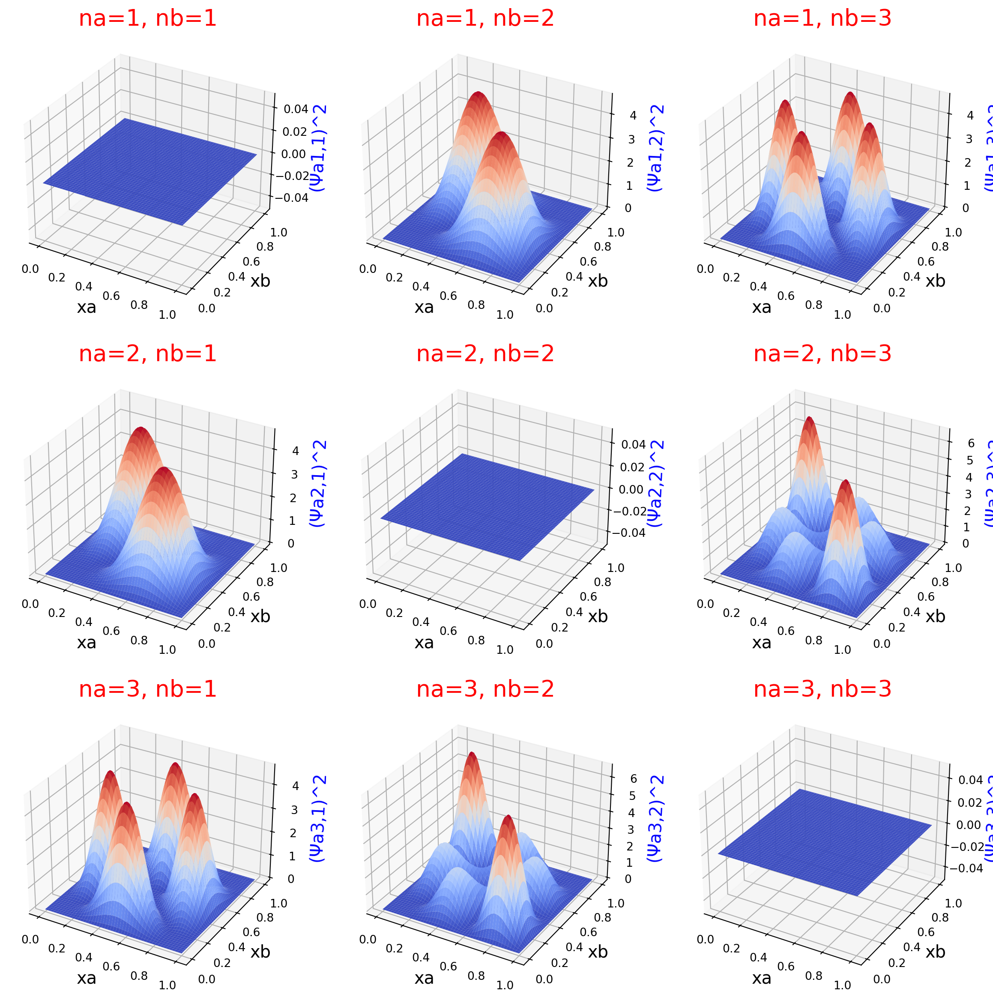
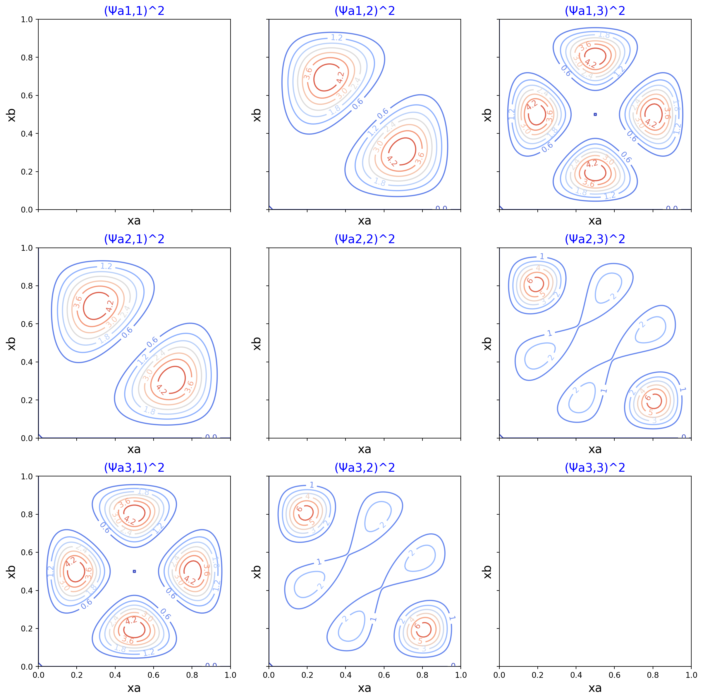
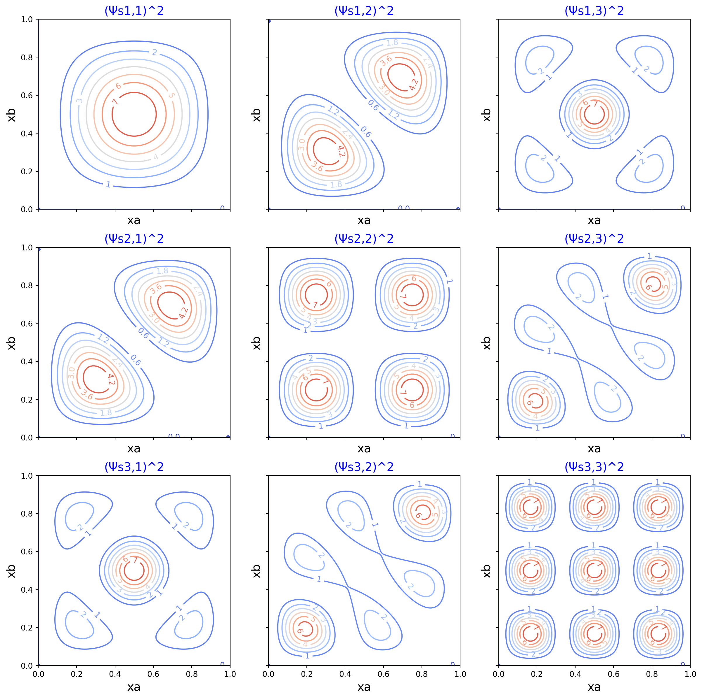

import numpy as np
import matplotlib.pyplot as plt
from matplotlib import cm
from math import sin, sqrt, pi
class TwoNonInteractingInABox:
"""
This class models two non-interacting particles in a one dimensional box.
"""
def __init__(self, mass=1, length=1):
"""
Mass and length can be in whatever units you like, but
make sure these units are consistent with each other
to give meaningful results.
This class assumes the mass of each particle is the same.
Parameters
----------
mass: float
The mass of each particle
length: float
The length of the one-dimensional box
"""
self.mass = mass
self.length = length
def wavefunction(self, na, nb, xa, xb):
"""
Returns the value of the wavefunction of the two non-interacting
particles.
For xa and xb:
0 < xa < self.length
0 < xb < self.length
Parameters
----------
na: int
The quantum number of particle a.
nb: int
The quantum number of particle b.
xa: float
The position of particle a.
xb: float
The position of particle b.
Returns
-------
float
value of the wavefunction.
"""
return 2 / self.length * sin(na * pi * xa / self.length) * sin(nb * pi * xb / self.length)
def symmetric(self, na, nb, xa, xb):
"""
Returns the value symmetric wavefunction of the two non-interacting
particles.
na: int
Quantum number of particle a.
nb: int
Quantum number of particle b.
xa: float
Position of particle a.
xb: float
Position of particle b
Returns
-------
float
Value of the symmetric wavefunction
"""
return sqrt(0.5) * (self.wavefunction(na, nb, xa, xb) + self.wavefunction(nb, na, xa, xb))
def antisymmetric(self, na, nb, xa, xb):
"""
Returns the value antisymmetric wavefunction of the two non-interacting
particles.
na: int
Quantum number of particle a.
nb: int
Quantum number of particle b.
xa: float
Position of particle a.
xb: float
Position of particle b
Returns
-------
float
Value of the antisymmetric wavefunction
"""
return sqrt(0.5) * (self.wavefunction(na, nb, xa, xb) - self.wavefunction(nb, na, xa, xb))
def prob_density(self, na, nb, symmetric=True, points=100):
"""
Returns all the arrays to plot surface or contour plots of the
probability density as a function of xa and xb (the positions of
each particle).
Parameters
----------
na: int
Quantum number of particle a
nb: int
Quantum number of particle b
symmetric: bool
True if the symmetric probability density is needed. False if the
antisymmetric desnity is needed.
points: int
How many points along each axis to sample on the surface.
Returns
-------
np.array, np.array, np.array
First array is the 1d array of xa points. Second array is 1d array of
xb points. Third array is two dimensional array of probability density
at the intersection of the positions of the two particles.
"""
xas = np.linspace(0.0, self.length, points)
xbs = np.linspace(0.0, self.length, points)
zs = np.zeros((points, points), np.float64)
for ixa, xa in enumerate(xas):
for ixb, xb in enumerate(xbs):
if symmetric:
zs[ixa, ixb] = self.symmetric(na, nb, xa, xb) ** 2
else:
zs[ixa, ixb] = self.antisymmetric(na, nb, xa, xb) ** 2
return xas, xbs, zsThis code and these plots explore Molecular Modelling for Beginners, 2nd Ed. by Alan Hinchliffe Section 12.6, pages 181 to 184. In this Section, the author explores the concepts of particle indistinguishability, symmetric, and antisymmetric wavefunctions. I recommend you read the text for a complete treatment of these concepts. However, I cover the essentials here.
We can write a wavefunction and total energy for two non-interacting particles in a one-dimensional box as:
\[ \psi_{n_A,n_B}(x_A, x_B) = \frac{2}{L} \sin\Bigl(\frac{n_A \pi x_A}{L}\Bigr) \sin\Bigl(\frac{n_B \pi x_B}{L}\Bigr) \]
\[ E_{n_A,n_B} = (n_{A}^2+n_{B}^2) \frac{h^2}{8mL^2} \]
\[ n_A, n_B = 1, 2, 3,\dots \]
\[ 0 \leqslant x_A \leqslant L \]
\[ 0 \leqslant x_B \leqslant L \]
We need a wavefunction which preserves an indistinguishability requirement. We achieve this by adding or subtracting two wavefunctions. Adding gives us a symmetric wavefunction; subtracting gives us an antisymmetric wavefunction. Symmetric total wavefunctions maintain their sign if we swap the underlying individual wavefunctions. On the other hand, antisymmetric wavefunctions change their sign when we switch the underlying individual wavefunctions. This gives us two more equations, each with an appropriate normalization constant.
Symmetric for energy levels 1 and 2 (Eqn. 12.19 from Hinchliffe):
\[ \psi_s(x_A, x_B) = \sqrt\frac{1}{2} \bigl(\psi_{1,2}(x_A, x_B) + \psi_{2,1}(x_A, x_B)\bigr) \]
Antisymmetric for energy levels 1 and 2 (Eqn. 12.20 from Hinchliffe):
\[ \psi_a(x_A, x_B) = \sqrt\frac{1}{2} \bigl(\psi_{1,2}(x_A, x_B) - \psi_{2,1}(x_A, x_B)\bigr) \]
Python code
Here is the main class that runs the plots.
Symmetric wavefunction squared
Surface plot and contour plot of the probability density of two interacting particles.
These plots expand upon Fig. 12.12 in Hinchliffe, with an important exception: These plots are of the symmetric wavefunction squared, which matches the caption of the Fig. 12.12 in Hinchliffe. However, the plot in the textbook is not of the squared wavefunction; rather, it is a plot of the wavefunction that is not squared, as can be seen in the book with the negative values on the contour lines. Hence, the plot in the book has a misleading caption. I follow the text’s caption in this example, which makes my contour plots disagree with image in the text’s figure.
box = TwoNonInteractingInABox(mass=1.0, length=1.0)
fig, axs = plt.subplots(nrows=3, ncols=3, figsize=(15, 15), subplot_kw={"projection": "3d"})
nas = [1, 2, 3]
nbs = [1, 2, 3]
for ina, na in enumerate(nas):
for inb, nb in enumerate(nbs):
xas, xbs, zs = box.prob_density(na=na, nb=nb, symmetric=False)
xs, ys = np.meshgrid(xas, xbs)
ax = axs[ina, inb]
ax.set_xlabel('xa', size=15)
ax.set_ylabel('xb', size=15)
ax.set_zlabel(f'(Ψa{na},{nb})^2', size=15, color='b')
ax.set_title(f'na={na}, nb={nb}', size=20, color='r')
ax.plot_surface(ys, xs, zs, cmap=cm.coolwarm, linewidth=0, antialiased=True)
box = TwoNonInteractingInABox(mass=1.0, length=1.0)
fig, axs = plt.subplots(nrows=3, ncols=3, figsize=(15, 15), sharex=True, sharey=True)
nas = [1, 2, 3]
nbs = [1, 2, 3]
for ina, na in enumerate(nas):
for inb, nb in enumerate(nbs):
xas, xbs, zs = box.prob_density(na=na, nb=nb, symmetric=False)
xs, ys = np.meshgrid(xas, xbs)
ax = axs[ina, inb]
ax.set_xlabel('xa', size=15)
ax.set_ylabel('xb', size=15)
ax.set_title(f'(Ψa{na},{nb})^2', size=15, color='b')
cs = ax.contour(ys, xs, zs, cmap=cm.coolwarm, antialiased=True)
ax.clabel(cs, inline=True, fontsize=10)
Antisymmetric wavefunction squared
Surface plot and contour plot of the probability density of two interacting particles.
These plots expand upon Fig. 12.13 in Hinchliffe, which depcits the square of the antisymmetric wavefunction. In contrast to Figure 12.12 in the text, the caption in Fig. 12.13 agrees with the square of wavefunction which is plotted. Hence the values in these plots match those in the text.
Note in the plots where “na=nb,” the probability density is zero. This satisifies the Pauli exclusion principle for antisymmetric wavefunctions. Our antisymmetric probability densities go to zero when we attempt to place the two particles in the same quantum state.
box = TwoNonInteractingInABox(mass=1.0, length=1.0)
fig, axs = plt.subplots(nrows=3, ncols=3, figsize=(15, 15), subplot_kw={"projection": "3d"})
nas = [1, 2, 3]
nbs = [1, 2, 3]
for ina, na in enumerate(nas):
for inb, nb in enumerate(nbs):
xas, xbs, zs = box.prob_density(na=na, nb=nb, symmetric=False)
xs, ys = np.meshgrid(xas, xbs)
ax = axs[ina, inb]
ax.set_xlabel('xa', size=15)
ax.set_ylabel('xb', size=15)
ax.set_zlabel(f'(Ψa{na},{nb})^2', size=15, color='b')
ax.set_title(f'na={na}, nb={nb}', size=20, color='r')
ax.plot_surface(ys, xs, zs, cmap=cm.coolwarm, linewidth=0, antialiased=True)box = TwoNonInteractingInABox(mass=1.0, length=1.0)
fig, axs = plt.subplots(nrows=3, ncols=3, figsize=(15, 15), sharex=True, sharey=True)
nas = [1, 2, 3]
nbs = [1, 2, 3]
for ina, na in enumerate(nas):
for inb, nb in enumerate(nbs):
xas, xbs, zs = box.prob_density(na=na, nb=nb, symmetric=True)
xs, ys = np.meshgrid(xas, xbs)
ax = axs[ina, inb]
ax.set_xlabel('xa', size=15)
ax.set_ylabel('xb', size=15)
ax.set_title(f'(Ψs{na},{nb})^2', size=15, color='b')
cs = ax.contour(ys, xs, zs, cmap=cm.coolwarm, antialiased=True)
ax.clabel(cs, inline=True, fontsize=10)